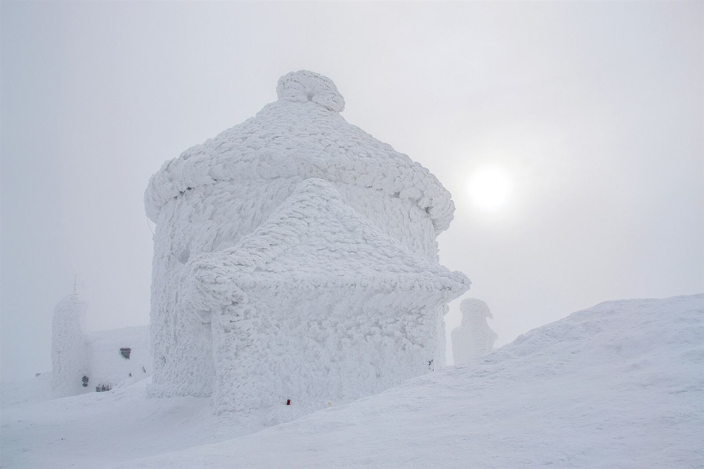
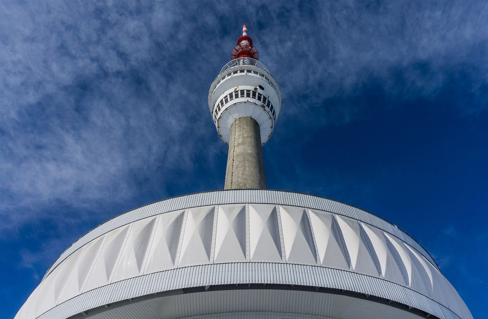
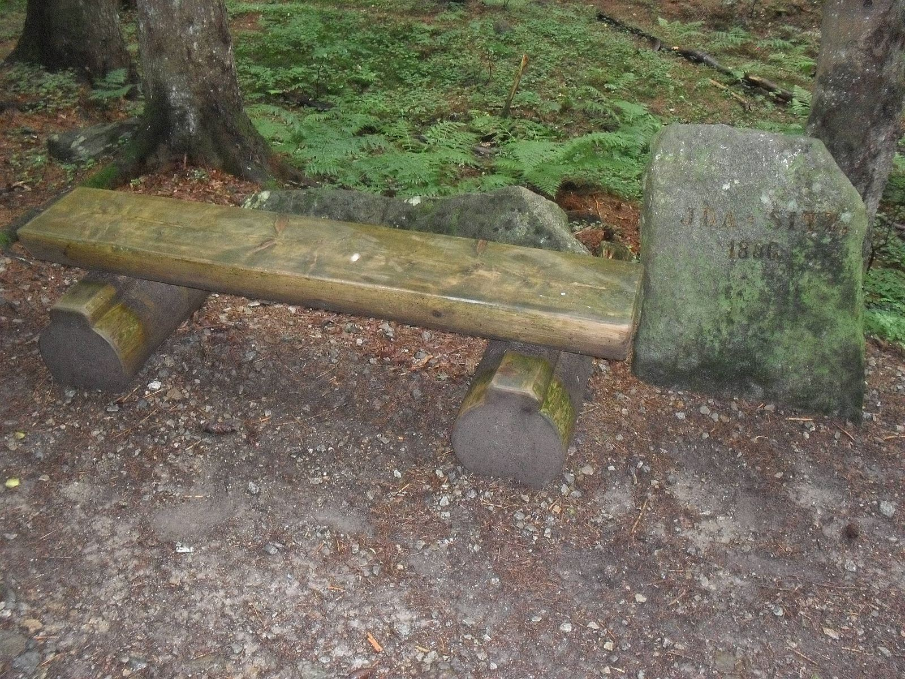
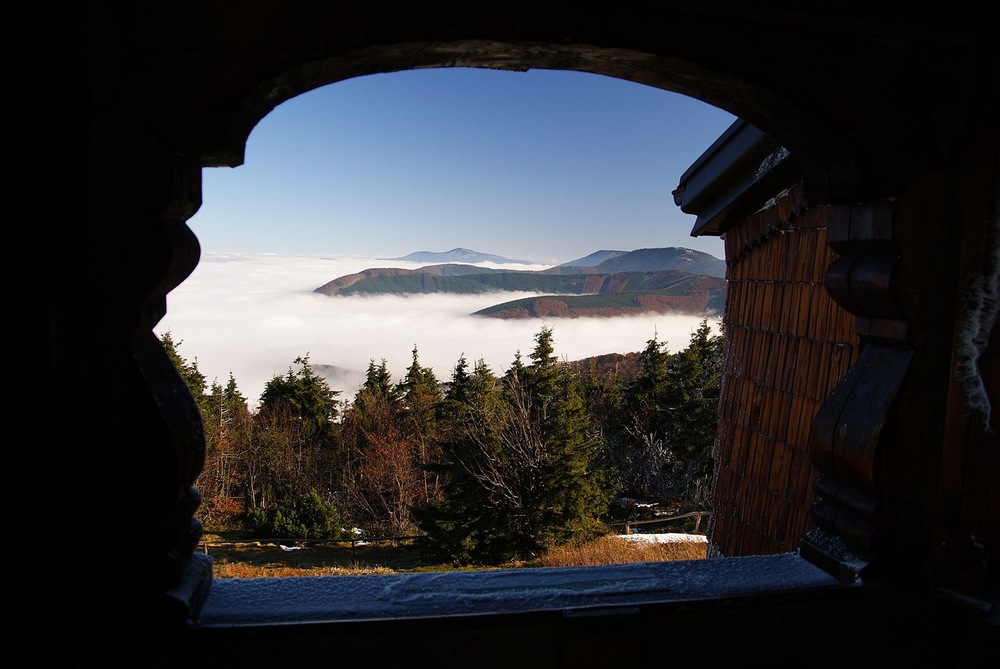
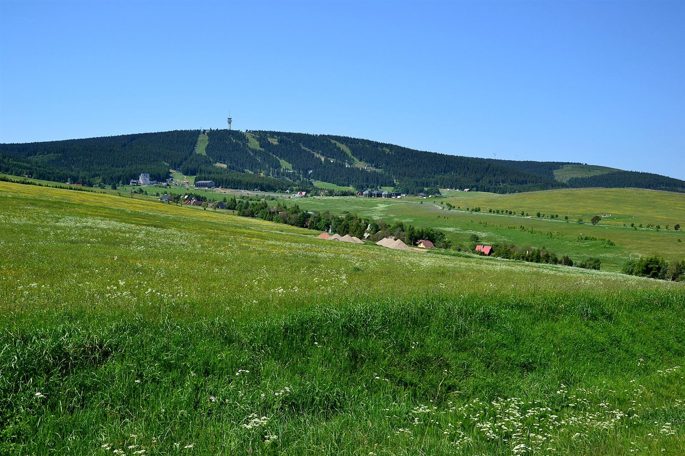

Pohoří
Pět hor, kam jezdím nejčastěji. Každé má jinou povahu a jinak se do něj jezdí.

Krkonoše
Nejvyšší české hory a taky nejnavštěvovanější. Hřebeny nad hranicí lesa připomínají spíš Skandinávii než střední Evropu, jen je na nich v létě víc lidí.
Nejlíp se tu chodí brzy ráno nebo mimo prázdniny. Počasí se mění rychle a mlha u Luční boudy dokáže zmást i lidi, kteří sem jezdí léta.
- Nejvyšší bod
- Sněžka, 1 603 m
- Moje túry
- 9, dohromady 121,7 km
- Doprava
- Vlakem do Trutnova nebo Vrchlabí, dál autobusem do Pece nebo Špindlerova Mlýna.
Vrcholy, na kterých jsem byl:

Hrubý Jeseník
Oblé hřbety, dlouhé výstupy a hodně prostoru. Na rozdíl od Krkonoš se tu dá jít celý den po hřebeni a potkat jen pár lidí.
Na Praděd vede silnice, takže vrchol bývá rušný. O kilometr dál je ale klid.
- Nejvyšší bod
- Praděd, 1 491 m
- Moje túry
- 8, dohromady 92,9 km
- Doprava
- Vlakem do Jeseníku, Koutů nad Desnou nebo přímo na Ramzovou.
Vrcholy, na kterých jsem byl:

Šumava
Lesy, rašeliniště a velké vzdálenosti. Vrcholy nejsou nijak dramatické, zato se dá jít hodiny bez jediné vesnice.
Část území je v bezzásahové zóně národního parku a některé cesty jsou otevřené jen v sezóně. Před cestou se vyplatí zkontrolovat web NP Šumava.
- Nejvyšší bod
- Plechý, 1 378 m (česká strana)
- Moje túry
- 9, dohromady 124,0 km
- Doprava
- Vlakem do Nové Pece, Volar nebo Železné Rudy.
Vrcholy, na kterých jsem byl:

Beskydy
Strmé kopce s velkým převýšením, dobré hospody na hřebenech a legendy o Radegastovi.
Na Lysou horu se chodí z Ostravice, Malenovic nebo Krásné. Všechny cesty jdou do kopce od prvního kroku.
- Nejvyšší bod
- Lysá hora, 1 323 m
- Moje túry
- 6, dohromady 71,1 km
- Doprava
- Vlakem do Frýdlantu nad Ostravicí nebo Ostravice, na Pustevny autobusem z Rožnova.
Vrcholy, na kterých jsem byl:

Krušné hory
Z české strany strmý sráz, nahoře náhorní plošina s rašeliništi a zaniklými vesnicemi.
Nejhezčí jsou na podzim, kdy je čistý vzduch a z hřebene je vidět až do Českého středohoří.
- Nejvyšší bod
- Klínovec, 1 244 m
- Moje túry
- 4, dohromady 29,1 km
- Doprava
- Vlakem do Kovářské nebo Vejprt, na Boží Dar autobusem z Karlových Varů.
Vrcholy, na kterých jsem byl: